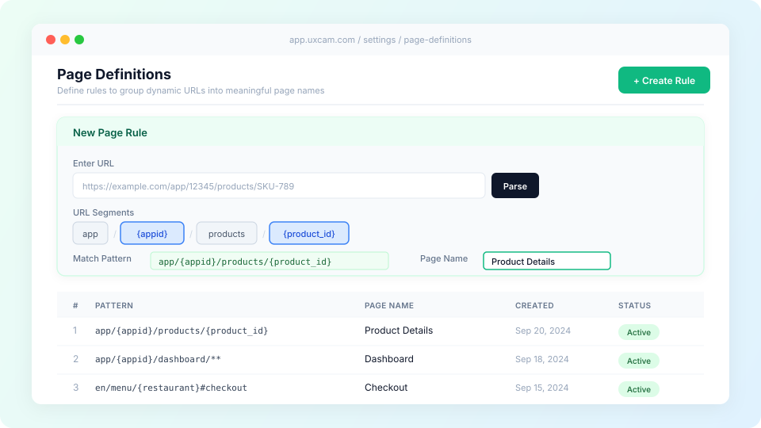

Page definition
Designing a rules engine that turns complex, dynamic URLs into meaningful page names for cleaner analytics.

Overview
Web analytics depends on accurate page identification. Unlike mobile apps with discrete screens, web pages are identified by URLs that can be complex, dynamic, and inconsistent. A single product page might generate thousands of unique URLs based on product IDs, session parameters, and query strings.
I designed the Page Definition feature that allows users to create custom rules to categorize and group similar URLs into single pages, assign meaningful names, and save dynamic parameters for filtering, all without writing a single line of regex.
The Problems
Dynamic URLs
Dynamic URL parameters like session IDs, user IDs, and product SKUs make it impossible to consolidate data. A product details page with 500 products creates 500 separate "pages" in reports, cluttering dashboards and hiding real insights. Users needed to see aggregate page performance while retaining the ability to filter by individual parameter values.
Fragment-based navigation
Some web apps use URL fragments (#checkout, #cart) to load new content without page reloads. Standard tracking based on path changes misses these entirely. Users with fragment-based SPAs had no way to track these as separate page views.
Unreadable page names
URLs are too long and complex for analytics. The most meaningful part, typically the end of the URL, gets trimmed in charts and tables. Users needed human-readable names replacing cryptic URL paths in every report across UXCam.
How It Works
Enter a URL and parse it into segments
Users paste a URL and UXCam automatically breaks it into clickable path segments, stripping query parameters. Each segment becomes an interactive chip that can be marked as static or dynamic.
Select dynamic segments and name parameters
Clicking a segment marks it as dynamic. Users can assign a meaningful parameter name (like {appid} or {product_id}) or leave it as a wildcard (*). Named parameters become available as screen visit properties for filtering and grouping across dashboards.
Handle fragments and trailing paths
A checkbox enables fragment support, adding hash segments to the rule. Another option, "Ignore everything after the last path level," appends ** to catch path variations the user hasn't explicitly defined.
Name the page and test the rule
Users assign a display name that replaces the URL everywhere in UXCam: reports, screen flows, session timelines. Before saving, they can test sample URLs against the rule to verify matches, reducing the risk of misconfigured rules.
Design Decisions
The primary design challenge was making regex-level pattern matching accessible without requiring regex knowledge. The solution was a visual segment picker that builds the match pattern in real-time as users interact with URL parts.
Rules are evaluated top-to-bottom by hierarchy order. This allows users to create specific rules that take priority over generic ones. For example, a rule matching the exact path "empty" can be ranked above a wildcard rule, so first-time states get their own page name while all other variations fall through to the general rule.
The rules table shows pattern, page name, creation date, and status (active/archived) at a glance. Archiving instead of deleting preserves the ability to restore rules within 90 days. A changelog tracks every creation, edit, and archive with who made the change and when, critical for teams where data consistency matters.
Key Constraints
- Maximum 100 rules per app (hard limit, archiving frees slots)
- Up to 5 named parameters per URL rule
- Parameter values capped at 1024 characters
- Rules apply to future sessions only, changes are never retroactive
- Query parameters excluded from rule matching (future iteration)
- Permissions: only org owners, org managers, and app managers can create or edit rules
Outcome
Page Definition enabled accurate web analytics for customers with complex, dynamic site architectures. The visual rule builder made the feature accessible to product managers and analysts without technical expertise, while the parameter naming system gave power users the filtering depth they needed. The testing workflow, both during creation and at the general level, reduced misconfiguration and gave teams confidence in their data.